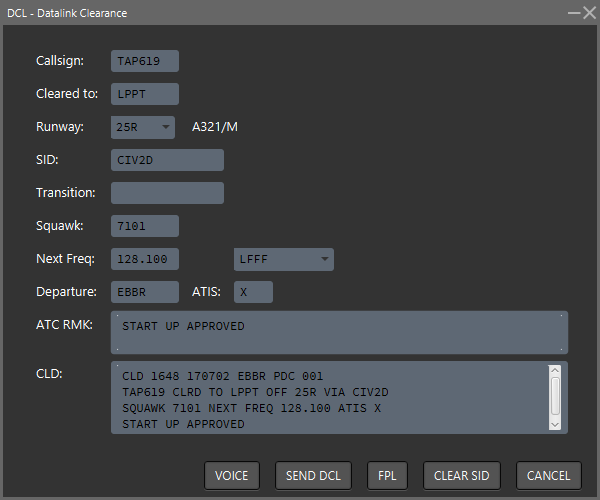

DCL - Data-link Clearance

The data-link clearance dialogue box is used to calculated, assign, and optionally communicate, IFR flight-plan clearances.
- Callsign - will be automatically completed based on the selected target.
- Cleared to - will be automatically completed as the destination airport from the flight-plan of the selected target.
- Runway - the drop-down list allows selection of the departure runway. If that departure runway has been specified in the ATIS for the departure airport, then this will be used by default.
- SID - once the runway has been specified, the SID will be calculated based on the flight-plan using data in the FIR DEF. In the event that more than one SID matches the departure airport/runway, it is not specified which will be returned; there is currently no way to make an alternative choice in the current version of IVAC2. Please note that FIR DEFs may include SIDs which are dependant on multiple conditions, such as aircraft type, time-of-day, and available equipment.
- Transition - not used in the current version of IVAC2.
- Squawk - the controller may manually enter the 4-digit transponder squawk code to be assigned to this target.
- Next Freq - the frequency which the pilot of the target aircraft should contact after receiving their clearance; use the drop-down list of available controllers to make the selection. Select yourself if you wish the pilot to remain on your frequency.
- Departure - will be automatically completed as the departure airport from the flight-plan of the selected target.
- ATIS - will be automatically completed as your current ATIS letter.
- ATC RMK - this can be optionally completed with any additional text which you require to be included with the clearance.
- CLD - this text is gradually built-up as data is input into the dialog; it represents the actual transmission which will be made to the target when clicking the “SEND DCL” button.
The buttons along the bottom of the dialogue are as follows:
- VOICE - used if the clearance has been read to the pilot over the voice channel. IVAC2 will assign the various label tags such as SID, CFL but not transmit the clearance using CPDLC.
- SEND DCL - this will send the text in the CLD box, using CPDLC, to the specified target; the various label tags such as SID, CFL will also be updated according to the clearance.
- FPL - Open the Flight-Plan dialogue box.
- CLEAR SID - No funtcion yet, it is the same as CANCEL.
- CANCEL - closes the dialogue without making any transmission or updating the label tags.
See the Terminal2 Solutions short tutorial video on DCL using IVAC2.